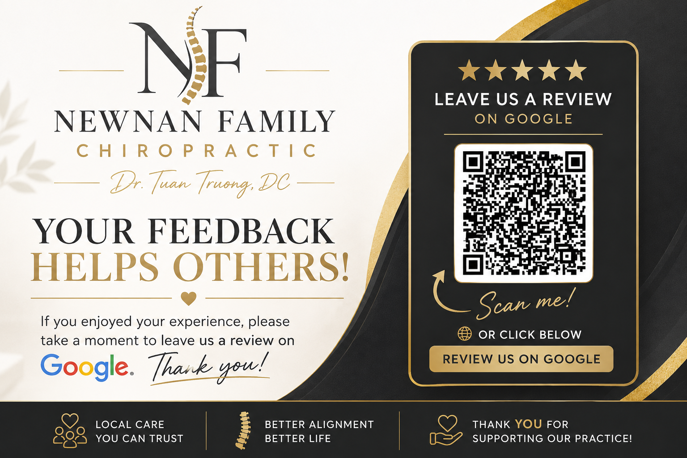

Request a Visit
Call the office or submit a basic appointment request. Your time is confirmed only after the office contacts you.
Serving Newnan & Coweta County for 25+ Years
Dr. Tuan Truong provides one-on-one care for back pain, neck pain, sciatica, headaches, accident-related discomfort, sports concerns, and family wellness. Visits are focused, clearly explained, and tailored to the individual.
Read verified patient feedback on Google before choosing care.
Why Patients Choose Us
Newnan Family Chiropractic is a locally owned, single-doctor practice. Dr. Truong takes time to hear what is bothering you, evaluate whether chiropractic care is appropriate, and explain the recommended plan.
The office welcomes new patients, families, VA Community Care patients with authorization, and people seeking care after an auto accident or personal injury.
Services
Explore condition-specific information, what an evaluation may include, and when another level of care may be more appropriate.
Lower back pain, stiffness, muscle tension, and movement limitations.
02Neck stiffness, posture strain, soreness, and restricted motion.
03Pain, tingling, or altered sensation extending into the hip or leg.
04Tension-type and neck-related headache patterns after an appropriate evaluation.
05Evaluation and care for accident-related neck pain, back pain, and stiffness.
06Age-appropriate chiropractic care for children, teens, adults, and families.
Serving patients in Newnan for more than 25 years.
Meet Your Chiropractor
Dr. Truong's approach centers on listening first, evaluating carefully, and making recommendations that fit the patient's condition and goals. The practice is designed to feel personal, comfortable, and easy to understand.
Your First Visit
Call the office or submit a basic appointment request. Your time is confirmed only after the office contacts you.
Review symptoms, health history, daily activities, and the goals that matter to you.
If chiropractic care is appropriate, Dr. Truong explains the findings and recommended next steps.
Patient Feedback
Read current, independently published reviews before requesting an appointment. Existing patients can also use the direct review link to share their experience.

Request an Appointment
Submit a basic appointment request online or call to ask about same-day availability. Do not include private medical details in the online form.
Insurance & Payment
Newnan Family Chiropractic works with many major insurance plans, VA Community Care authorizations, personal injury cases, and self-pay patients. Participation and benefits vary by plan and are not guaranteed until verified.
Urgent Symptoms
Call 911 or seek immediate medical evaluation for a medical emergency, severe trauma, sudden weakness or numbness, loss of bowel or bladder control, chest pain, stroke-like symptoms, or a sudden severe headache.
Visit Our Office
197 Jefferson Parkway
Newnan, GA 30263